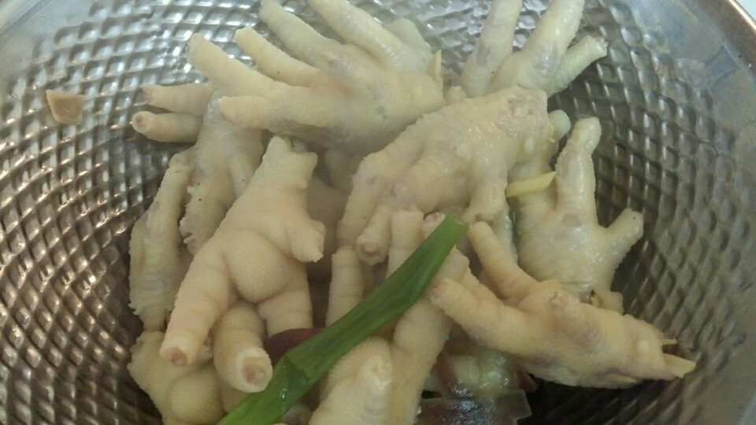

Ingredients
주 재료
- 닭발400g
- 고추장1큰술
- 생강1/3대
- 파약간
- 후추선택
양념
- 고춧가루4큰술
- 월계수잎1큰술
- 마늘1큰술
- 소금1큰술
- 참기름2큰술
Steps
- 닭발을 준비합니다
- 1을 깨끗이씻어서 발톱을 가위로 자릅니다
- 뜨거운물에 데처서 깨끗이다시한번씻습니다
- 3을 물에 파 마늘 생강 월계수잎 소주를 넣고 뚜껑을 얼어놓고 푹 끓입니다
- 4가익으면 닭발을 건저 놓습니다
- 5에 소금 후추로 양념을 합니다

- 팬에 고추가루 마늘 간장 참기름 생강 과일청 파를 넣고 볶다가 닭발을 넣고 볶습니다
- 매콤한 닭발 볶음이 완성됐습니다